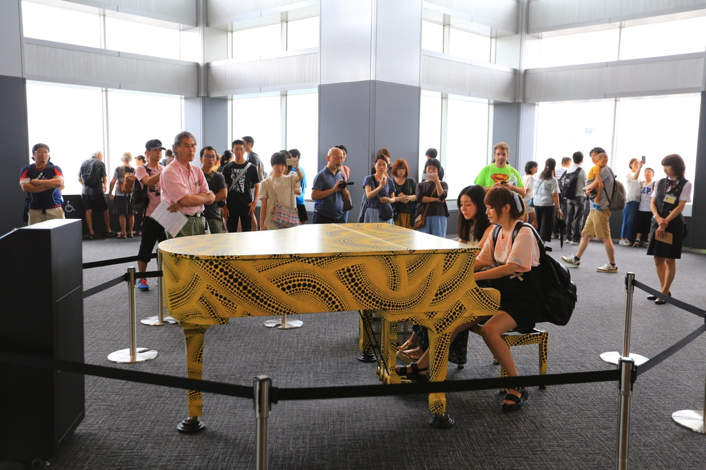
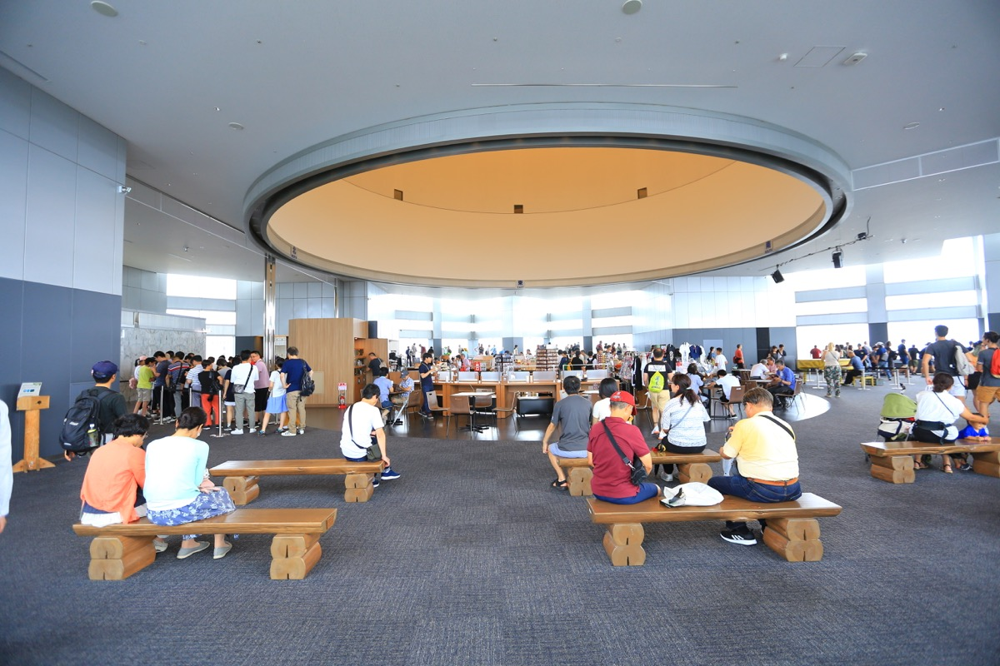

新宿的东京都厅（即东京都政府大楼）是一个政府办公场所，因此是免费的。出于在国内生活多年的经验，这一类景点其实并不抱多大希望。在排了十多分钟的队，坐着电梯登上顶楼，接受了工作人员的日式鞠躬后，我们看到了都厅外的东京全景。
由于有了之前几次在日本登上高楼俯瞰城市全景的体验，这一刻并没有特别的感受，窗外依然是能见度极高，看着心情舒畅开朗。耳边响起了宫崎骏电影音乐的钢琴演奏，我们也没大在意，想着可能是播放的音乐或是官方安排的乐手在此演奏，我们还是享受在观看窗外的美景上。
待我们窗外照片拍得差不多，把注意力转向场内时，发现大厅里原来摆着的钢琴布满了波点花纹，原来是草间弥生的作品，名字叫“都厅回忆钢琴”。钢琴前坐着一位背着书包的女生，看似大学生的样子，演奏着宫崎骏动画的曲子，旁边围着一圈拍照的游客。
这多少有点出乎我们意料，难道是遇到了会弹钢琴的大神游客？待这位女生演奏完离开，围观游客报以掌声，这时又一位背着背包的男生准备上前演奏，我们才发现原来旁边有那么几个人在排着队，有看似教师、大叔、学生等。

于是接下来我们站在一旁欣赏了来自他们演奏的好几首曲子，各个水平都很棒。我们才知道原来这里是开放给会弹钢琴的市民上台展示自己的。像今天这批市民，就看似像某位大学音乐老师带队的学生。在一旁的休息桌上还有用手机为他们拍摄的人员以及琴谱。
那一刻有种特别的感动，这种感觉除了来自熟悉的久石让的曲子，更多是来自于未曾想到政府的一个空间能办得如此有活力，在高雅和亲民之间处理得如此自然。这未曾在国内遇到过，它与在一个游客空间里摆一台钢琴，或雇佣一名专业乐手为大众演奏曲子有着明显的区别。
这只是这次日本之旅的一个片段，实际上在整个旅程中，我们都感觉在东京，普通百姓接触到艺术的距离很近，门槛很低，而不是像国内只是某部分人的专属或小情调，与大众生活相距甚远。这也许也是这个国度审美水平普遍比较高的原因之一。
沉浸在这个环境中，我们比原计划又多逗留了很久，期间之前弹琴的那位女生还和好友展示了一次双人合奏，围观的游客依然报以适度的掌声。我为一同上来的中国旅游团感到遗憾，他们在俯瞰完东京后已早早被导游催促离开。
